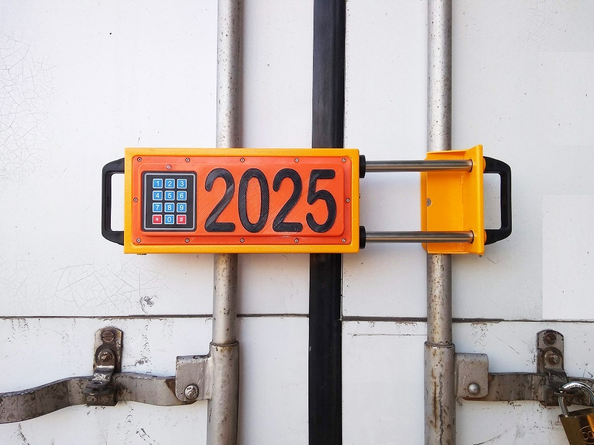

PRECINTOS ELECTRONICOS
Un servicio de seguimiento satelital de mercaderías compuesto por precintos electrónicos con GPS de última tecnología, orientado a la seguridad en el transporte de cargas, especialmente diseñado para el traslado de mercaderías en contenedores y enlonados, garantizando la inalterabilidad de las cargas transportadas
